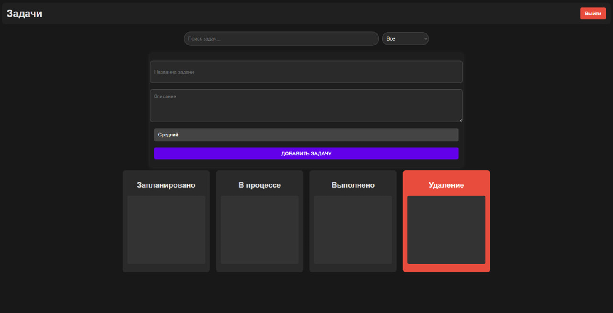
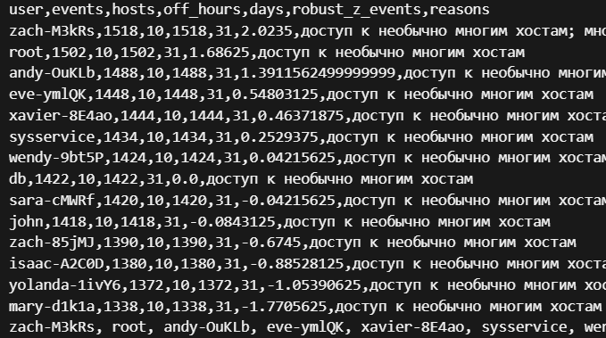

CRM: Partners & Orders
PySide6 + SQLAlchemy, импорт Excel, расчёт скидок. PostgreSQL/SQLite.
Python
Desktop

Task Manager Kanban
PHP + MySQL + JS, drag&drop, AJAX, простая схема БД.
PHP
Web

Log Analytics
Нормализация JSON→JSONL, аномалии, IP↔host, подозрительные пользователи.
Python
Data